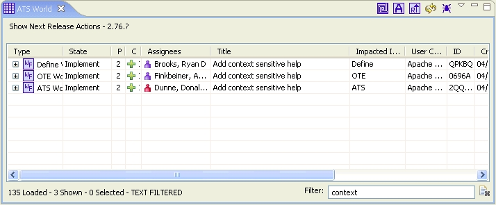

ATS World View

Purpose
Shows ATS workflow objects including Actions, Team Workflows, Tasks and Reviews that were
returned from a search normally performed by the ATS Navigator.
How to do it
Double-click search item from ATS Navigator. ATS World will show that it is loading. Upon
return, ATS World will contain all ATS objects from the search. In addition, a plus is shown
next to any object. Upon selection, viewer will expand to show all children of the selected
object.
Open ATS Action, Team Workflow, Task or Review
Double-click to open any item open in ATS Workflow Editor.
Sorting
Selecting column headers will sort that column. Holding down Ctrl and selecting successive
columns will enable multi sort. Re-selecting a column will reverse sort that column.
The status label at the bottom will show the columns being sorted and which direction the
sort is being performed. To remove all sorting, right-click and select "Remove All Sorting".
Bottom Status Line
The bottom status line will show the total number of objects loaded into the table, the total
shown and the total selected. It will also show all the sorts and filters that are enabled.
Top Status Line
The top status line will show the name of the search that populated the ATS World View. A
warning icon ( ) will show if the search returned no objects to show.
) will show if the search returned no objects to show.
Filtering
Bottom right of the ATS World shows a filter box that is a quick way to filter by one or two words.
Simply type in a string, press enter and ATS World will only show those loaded objects that where one of the
visible cells contains the typed text. This is a case in-sensitive search. Select the clear
action ( ) to clear out the text and restore all loaded actions.
) to clear out the text and restore all loaded actions.
Actions
Select to load ATS World with all the actions that you have work to do on.
Select  to create a new Action.
to create a new Action.
Select  to rank actions by deadline date then by priority and annual cost avoidence.
to rank actions by deadline date then by priority and annual cost avoidence.
Select  to refresh the current search.
to refresh the current search.
Select  to Customize Table.
to Customize Table.
Select  to Report a Bug.
to Report a Bug.